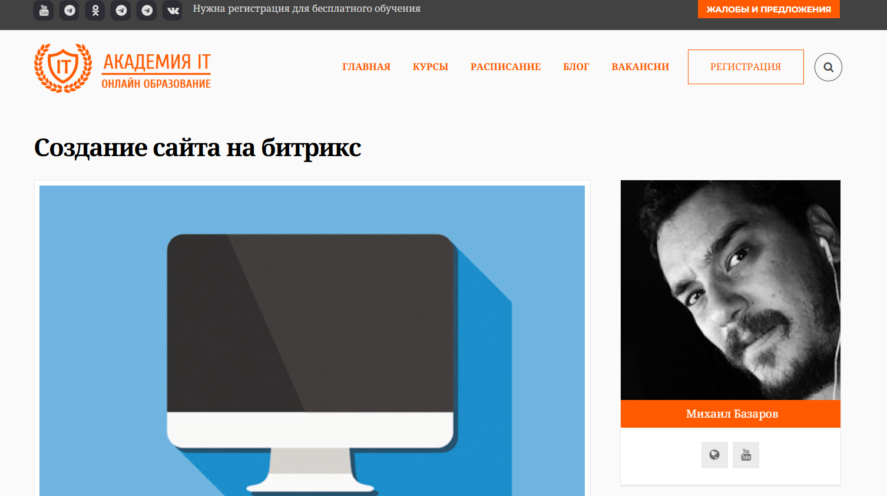
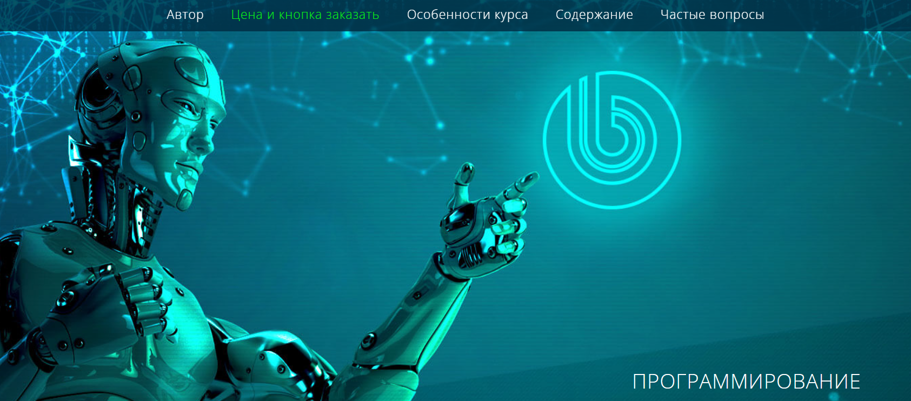

Курс «Bitrix-разработчик с нуля» — Нетология

Сайт: https://netology.ru/programs/bitrix
Цена: 110 000 руб без скидки
Продолжительность: 10 месяцев
Получаемый документ: Диплом о профессиональной переподготовке
Поддержка в трудоустройстве: Мы предоставим помощь в поиске работы
Что вы получите
- Участие в бесплатной программе по поиску работы, организованной Центром карьерного роста
- Консультации по составлению резюме
- Навыки уверенного представления своих сильных сторон
- Методы поиска подходящих вакансий
- Знакомство с сервисами для трудоустройства и доступ к платформе проектов
- Подготовка к интервью
- Умение свободно говорить о себе и отвечать на вопросы
- Создание портфолио
- Оформление портфолио для повышения доверия у работодателей
- Навыки фриланса
- Поиск первых клиентов и налаживание общения с ними
Кому подойдёт курс
Вы можете быть новичком в профессии – ваше предыдущее образование или опыт работы значения не имеют. Вы получите возможность освоить профессию с нуля, получая знания от опытных наставников.
Чему вы научитесь
В процессе обучения вы создадите:
• Кроссбраузерную верстку блога с применением HTML и CSS
• Игра «Крестики-нолики» на JavaScript
• Информационный сайт на платформе 1С-Битрикс
• Онлайн-магазин спортивного инвентаря на базе 1С-Битрикс
Содержание курса
Программа курса
Занятия проводятся дважды в неделю с 19:00 до 21:00. Вы выполните более 100 практических заданий, создадите три курсовых работы и защитите дипломный проект.
Часть 1. Основы разработки веб-сайтов с использованием JavaScript и PHP
Вёрстка сайта с использованием HTML и CSS
Вы научитесь создавать страницы на HTML и CSS, а также модифицировать существующие дизайны. После завершения этого раздела вы сможете создать лендинг самостоятельно.
12 часов теории
24 часа практики
Теги для вёрстки контента
Структура страниц
Формы
CSS селекторы
Определение контекста элементов
Блочная модель
Позиционирование
Стилизация текста
Оформление декоративных элементов
Состояние интерактивных компонентов
Кроссбраузерная верстка блога на HTML и CSS
Курсовая работа
В этом проекте вы создадите дизайн личного блога с кроссбраузерной версткой, используя HTML и CSS.
24 часа практики
Основы программирования на JavaScript
Вы познакомитесь с базами программирования, напишете свои первые строчки кода и создадите простые приложения.
Вы будете применять JavaScript на практике, что поможет глубже понять функции фронтенда.
Изучите различные языки программирования и научитесь выбирать подходящий в зависимости от своих личных и профессиональных целей.
В финальном проекте вы создадите онлайн-игру, аналогичную «Монополии».
12 часов теории
24 часа практики
Алгоритмы
Переменные, числовые данные и строки
Логические операции
Условия в коде
Массивы
Циклы
Функции и подпрограммы
Объекты
Синхронное и асинхронное выполнение алгоритмов
Игра «Крестики-нолики» на JavaScript
Курсовая работа
На этом этапе вы разработаете игру «Крестики-нолики». Визуальная часть уже подготовлена, и вам нужно реализовать игровую логику. Игроки по очереди ставят крестики и нолики.
24 часа практики
Система контроля версий Git
Вы научитесь работать с Git и GitHub, что позволит вам публиковать свои домашние задания и формировать портфолио во время обучения — работодатели обычно требуют примеры кода с GitHub.
4 часа теории
9 часов практики
Функции системы контроля версий
Основные операции: фиксация изменений, откат, анализ истории
Работа с GitHub
Ветки, слияние и разрешение конфликтов
Командная работа
Основы PHP
Вы начнёте изучение PHP. В этом разделе вы познакомитесь с основными конструкциями языка и научитесь работать с функциями и объектами.
13 часов теории
32 часа практики
Введение в PHP и PhpStorm
Консольные приложения на PHP
Основные операторные структуры и функции
Создание функций на PHP
Основы объектно-ориентированного программирования
HTTP, заголовки и сессии
Работа с файлами и HTML-формами
Развёртывание приложений на хостинге
Работа веб-приложений
Вы изучите взаимодействие фронтенд и бэкенд частей. Узнаете о популярных методах и форматах передачи данных в веб-разработке и работе с API на промышленных HTTP-серверах.
7 часов теории
21 час практики
HTTP и современные технологии веб. Форматы передачи данных
Библиотека JQuery
Библиотека Bitrix JS
REST API в Bitrix Framework
Форматы обмена данными: JSON, XML
Работа с СУБД MySQL
Введение в профессию Bitrix-разработчика
Результат обучения
Финальный проект — интернет-магазин спортивного снаряжения
Вы создадите интернет-магазин на платформе 1С-Битрикс.
Ваша задача — разработать клиентскую и административные части проекта.
У вас будет месяц на завершение финальной работы.
Административная часть:
• Управление товарами
• Заказами
• Обновление новостей
• Страницы с текстовыми материалами
• Платежные системы
• Организация доставки
Клиентская часть:
• Текстовые страницы
• Меню
• Каталог товаров
• Раздел новостей
• Корзина
• Оформление заказов
Ключевые навыки
- Верстка веб-страниц с применением HTML и CSS
- Работа с фронтендом на JavaScript
- Работа с бэкендом на PHP
- Контроль версий кода через Git и GitHub
- Создание сайтов на базе фреймворка Bitrix
- Управление проектами на платформе 1С-Битрикс
- Взаимодействие с API сторонних сервисов
- Работа с новым ядром платформы Bitrix D7
Профессия 1С-разработчик в Skillbox

Сайт: https://skillbox.ru/course/profession-1c/
Цена: 3956 руб/мес с рассрочкой на 22 месяца
Продолжительность: 6 месяцев
Получаемый документ: сертификат от фирмы «1С»
Помощь в трудоустройстве: да
Станьте профессионалом в области разработки на платформе «1С:Предприятие» под руководством опытного наставника и начните зарабатывать, даже если у вас нет опыта программирования. По завершении курса вам будет предложена помощь в поиске работы.
Кому будет полезен данный курс
Новичкам
Вы приобретете практические навыки в программировании и работе с конфигурациями системы «1С:Предприятие 8», подготовитесь к экзамену «1С:Профессионал» и получите возможность трудоустройства в качестве программиста 1С.
Пользователям системы 1С
Вы сможете дорабатывать существующие конфигурации по требованиям заказчиков. Научитесь составлять технические задания, создавать отчёты, обрабатывать данные и изменять функционал.
Опытным программистам
Изучите основы оперативного учета, получите навыки использования учетных и расчётных регистров. Научитесь дорабатывать стандартные конфигурации 1С.
Получите сертификат от компании «1С»
Курс сертифицирован разработчиками «1С:Предприятия».
По окончании обучения вам будет выдано два документа — сертификат Skillbox и свидетельство от компании 1С. Эти документы подтвердят уровень ваших знаний и повысят вашу привлекательность для работодателей.
Чему вы научитесь
Автоматизация бизнес-процессов
Разработка систем учета
Создание и доработка функционала
Настройка отчетов для руководства
Проектирование баз данных
Интеграция 1С с другими системами
Создание собственной конфигурации
Гарантия трудоустройства или возврат средств
Вы получите персональную помощь от HR-менеджера. Вместе вы подготовите резюме, создадите портфолио и оцените карьерные перспективы, что поможет быстрее найти работу. У вас будет возможность выбирать наиболее подходящие вакансии и получите преимущество на собеседованиях.
Если вы не найдете работу, мы вернем вам деньги за обучение*.
Содержание курса
Вас ждут три раздела, которые окажут значительное влияние на вашу конкуренцию на рынке труда и подготовят к сертификации.
29 тематических модулей
57 видеоуроков
Курс «1С-разработчик с нуля до PRO»
Мини-курс «SQL»
Класс «Универсальные навыки программиста»
Спикеры
Александр Архипов
Специалист по внедрению, работающий в одну из крупнейших компаний-партнеров фирмы «1С»
Денис Слепцов
Руководитель отдела программного обеспечения
Александр Маковеев
Специалист по внедрению
Курс «Создание сайта на битрикс» — Академия IT

Сайт: https://academiait.ru/course/sozdanie-sajta-na-bitriks/
Цена: Бесплатно
Продолжительность: 14 уроков
Получаемый документ: отсутствует
Поддержка в трудоустройстве: отсутствует
Курс будет полезен всем, кто хочет ознакомиться с профессией.
Чему вы научитесь
Бесплатный курс онлайн «Создание сайта на Битрикс».
Завершив данный курс, вы сделаете важный шаг на пути к серьезному обучению и сможете глубже осознать свои увлечения и цели. Кроме того, у вас будет возможность бесплатно ознакомиться с множеством других интересных онлайн-курсов. Присоединяйтесь и получайте новые знания совершенно бесплатно. Также вы сможете найти и скачать необходимые книги, обучающие материалы, инструкции, презентации и прочие ресурсы без каких-либо затрат!
Образовательная программа
Урок 1: Введение. Создание сайта на базе Битрикс
Урок 2: Верстка дизайна с использованием HTML/CSS. Разработка сайта на платформе Битрикс
Урок 3: Установка системы Битрикс на ваш локальный компьютер (виртуальная машина Битрикс)
Урок 4: Создание шаблонов для Битрикс на основе HTML/CSS-верстки
Урок 5: Настройка навигационного меню в Битрикс
Урок 6: Управление инфоблоками в Битрикс, вывод инфоблоков на сайт, верстка инфоблоков
Урок 7: Формирование включаемых областей в Битрикс
Урок 8: Создание слайдера на Битрикс, используя инфоблок и компонент «Список новостей»
Урок 9: Улучшение дизайна сайта на платформе Битрикс
Урок 10: Формирование каталога товаров на Битрикс
Урок 11: Перенос сайта с Битрикс на хостинг, настройка форм поиска и регистрации пользователей
Урок 12: Верстка компонента «Каталог» на Битрикс
Урок 13: Создание анонсов каталога и основы поисковой оптимизации в Битрикс
Урок 14: Заключение и обсуждение с Яндексом
Курс «1С-Битрикс» — Факт.Школа

Сайт: https://school.fact.digital/
Цена: 18’000 рублей
Длительность: 3 месяца
Сертификат по окончанию курса: отсутствует
Помощь в поиске работы: возможность трудоустройства выпускников в одну из ведущих IT-компаний страны – «Факт».
Кому будет полезен курс
— Для студентов IT-специальностей
— Для людей, интересующихся самостоятельным изучением веб-разработки
— Для студентов технических направлений, желающих сменить специальность на программирование
— Для IT-специалистов, стремящихся перейти в область веб-разработки
Что вы сможете освоить
— Обучение в реальных условиях, а не только через видеоуроки
— Командная работа над конкретными проектами
— Сдача экзамена – гарантированное трудоустройство
— Возможность работы у одного из ведущих веб-разработчиков страны
Структура курса
— Изучение HTML, CSS
— Основы HTML
— Основы CSS
— Работа с текстовой информацией
— Операции со ссылками и изображениями
— Создание таблиц
— Работа с таблицами стилей HTML-форм
— Обучение PHP
— Основное знание PHP
— Расширение функционала PHP
— Обработка пользовательских данных с помощью PHP
— Интеграция PHP с MySQL
— Объектно-ориентированное программирование на PHP
— Осваиваем 1С-Битрикс
— Введение в систему управления контентом (CMS), возможности 1С-Битрикс
— Способы установки 1С-Битрикс, установка на виртуальной машине
— Структура Bitrix Framework, взаимодействие с администраторской панелью
— Верстка сайтов на 1С-Битрикс, распределение областей, понимание общей структуры сайта
— Функционал загрузки страницы
— Интеграция верстки в шаблоны 1С-Битрикс, основные принципы разметки стандартных шаблонов
— Сравнительная структура HTML-шаблона и типовая верстка 1С-Битрикс
— Компоненты 1С-Битрикс: типы и их функции
— Работа с меню в 1С-Битрикс
— Настройка прав пользователей и авторизация в 1С-Битрикс
— Использование карт в системе 1С-Битрикс, примеры и назначения
— Создание форм обратной связи в 1С-Битрикс, работа с информационными блоками
— Управление динамическими данными в 1С-Битрикс
— Кэширование в 1С-Битрикс, основы работы с кэшированием компонентов
— Сложные компоненты 1С-Битрикс
— Технологии, применяемые в сложных компонентах
— Поиск по сайту 1С-Битрикс
— Дополнительные стандартные функции для реализации функционала, работа с контентом в 1С-Битрикс
— Анализ типичных ошибок на итоговом экзамене 1С-Битрикс
— Подготовка к экзамену по 1С-Битрикс
Результат завершения курса: гарантированное трудоустройство в компанию «Факт» после успешной сдачи независимого экзамена от 1С-Битрикс.
Курс «1С – Битрикс. Быстрый старт разработчика» — Центр компьютерного обучения «Специалист» при МГТУ им.Н.Э.Баумана

Сайт: https://www.specialist.ru/course/1cbitraz
Цена:
— Для физических лиц
— Очно: 19 990 руб
— Онлайн: 19 950 руб
— Обучение в рассрочку: от 1 067 руб./месяц
— Индивидуальное обучение: 48 000 руб*
— Для организаций
— Очно: 24 490 руб
— Онлайн: 24 490 руб
Длительность: 24 академических часа + 12 академических часов бесплатно
Сертификат по окончанию курса: будет выдан
Помощь в трудоустройстве: отсутствует
Кому будет полезен курс
Идеальная подготовка для студентов:
— Успешное прохождение курса по HTML и CSS. Уровень 1.
— Умение создавать сайты с использованием HTML 5 и CSS 3 или аналогичный уровень подготовки.
— Успешное окончание курса PHP часть 1.
— Основы PHP8 или аналогичная подготовка.
Рекомендуемая подготовка (необязательная): успешное завершение курса 1С — Битрикс. Управление сайтом – администрирование или аналогичная подготовка.
Что вы сможете освоить
— Конфигурирование веб-сайтов на платформе 1С-Битрикс
— Операции с инфоблоками и API
— Создание собственных модулей
— Установка и настройка компонентов
— Разработка и настройка полноценного интернет-магазина
Структура курса
Модуль 1. Введение в создание сайта на Битрикс. Установка системы. Структура сайта (4 ак. ч.)
— Формирование понимания системы «1С-Битрикс»
— Установка и первичное конфигурирование продукта
— Создание нескольких сайтов на одной лицензии
— Структура системы и принципы управления сайтом.
— Освоение структуры сайта, организация структуры, методы взаимодействия с сервером, управление обработкой адресов.
Модуль 2. Инфоблоки. Работа с API «1С-Битрикс» (4 ак. ч.)
— Определение инфоблока
— Свойства инфоблока и его разделов
— Импорт и экспорт данных из инфоблока.
— Введение в API системы «1С-Битрикс»
— Использование базовых функций API
— События и работа с ними.
— Настройка редактирования элементов.
Модуль 3. Архитектура продукта. Сайты. Шаблоны (4 ак. ч.)
— Определение шаблона сайта
— Основные элементы шаблона сайта
— Архитектура продукта
— Структурные файлы
— Права доступа.
Модуль 4. Технологии. Автоматизация типовых процессов разработки (4 ак. ч.)
— Основы и методы отладки сайтов на «1С-Битрикс»
— Основные понятия администраторов, создание и использование мастеров
— Типичные задачи веб-разработчика и их автоматизация
— Понятие агента, обработка событий, кэширование.
Модуль 5. Модули и компоненты (4 ак. ч.)
— Подробное изучение файловой структуры
— Взаимодействие модулей и компонентов, принципы их организации
— Кастомизация и модификация стандартных компонентов, создание собственных.
Модуль 6. Создание интернет-магазина (4 ак. ч.)
Академическая нагрузка в учебном классе с преподавателем: 24 ак. ч. + 12 ак. ч. бесплатно*
* Дополнительные часы для самостоятельных занятий на компьютерах Центра предлагаются без оплаты. Вы сможете применить полученные знания, выполнить домашние задания и проконсультироваться с учителями Центра. Дополнительные часы можно получить в дни занятий по предварительной записи.
Утренним группам с 8:30 до 10:00
Дневным группам — по 1 ак. ч. до и после занятий (13.15-14.00, 17.10-17.55)
По завершению курса производится итоговая аттестация. Она проходит в форме тестирования на последнем занятии или на основании оценок практических работ, выполняемых в процессе обучения.
Результаты окончания курсов
Создание сайта на 1С-Битрикс схоже с работой с конструктором, состоящим из множества настраиваемых модулей.
Вы получите практические навыки под руководством преподавателя, установите дистрибутив, ознакомитесь с инструментами для создания сайтов на платформе 1С-Битрикс и научитесь поэтапно настраивать модули для разработки собственного интернет-магазина.
Курс «Битрикс» — irs.academy

Сайт: https://irs.academy/kurs_po_bitriks
Цена: 32 000 рублей
Длительность: 16 часов. 8 уроков
Сертификат по завершении курса: Сертификат специалиста по Битрикс
После окончания обучения вы получите сертификат, подтверждающий ваши достижения в онлайн-курсе по Битрикс.
Документ будет отправлен в электронном виде, а если потребуется, оригинал будет переслан Почтой России.
Кому подойдет данный курс
Для новичков
— Вы никогда не проходили курсы по 1С-Битрикс, но хотите работать с этой платформой?
Преподаватель академии HEDU подготовил курс для начинающих, поэтому информация будет доступна даже тем, кто еще не знаком с Битрикс.
Для владельцев бизнеса
— Вы хотите разобраться в особенностях своего сайта, чтобы контролировать работу сторонних специалистов или выполнять некоторые задачи самостоятельно?
Онлайн-курс по Битрикс будет отличным стартом.
Для контент-менеджеров
— Вам необходимо заполнять контентом веб-порталы, но у вас есть вопросы по работе с Битриксом?
Пройдите пошаговое обучение и оптимизируйте свои задачи.
Для администраторов сайтов
— В ваши обязанности входит актуализация информации на сайтах, и вы желаете заполнить пробелы в своих знаниях?
Запишитесь на курс по 1С-Битрикс, чтобы понять функционал платформы.
Для желающих дополнительно заработать.
Хотите ли вы найти вакансию, которая позволит выделять свободное время для работы?
Пройдите онлайн-курс по освоению платформы Битрикс с нуля в академии HEDU и получите ценные навыки.
Для фрилансеров
Хотите научиться удаленной работе и зарабатывать на своих знаниях?
Запишитесь на курс по Битрикс с нуля и начинайте принимать заказы.
Что вы узнаете
— Умение создавать сайты на платформе 1С-Битрикс
— Навыки установки и настройки программы самостоятельно
— Возможности редактирования содержимого страниц
— Видеоуроки по использованию 1С-Битрикс
— Сертификат после успешного завершения обучения
— Способы обеспечения безопасности вашего сайта
Структура курса
Урок 1 — Основы работы с CMS 1С-Битрикс
На первом уроке мы изучим процесс установки системы. Познакомимся с функциями администратора и научимся использовать визуальный редактор. Обсудим, какие команды необходимы в панели управления.
Урок № 2 — Визуальный редактор
На втором уроке уделим внимание возможностям визуального редактора: узнаем, какие задачи можно решить с его помощью. Поймем важность технической поддержки.
Урок № 3 — Создание структуры
Третий урок будет посвящен работе со страницами. Мы научимся добавлять изображения и видеоматериалы, а также вставлять гиперссылки. Кроме того, рассмотрим вопросы о карте сайта и разработке различных меню.
Урок № 4 — Роль информационных блоков
Четвертый урок ознакомит нас со статической и динамической информацией. Вы узнаете о различных типах инфоблоков и научитесь их создавать и управлять ими.
Урок № 5 — Изучение компонентов
На пятом уроке разберем компоненты системы, выясним их назначение и различия между простыми и сложными компонентами. Также обсудим навигационные элементы.
Урок № 6 — Настройки и инструменты
Шестое занятие начнет знакомство с системными параметрами. Вы узнаете, как формировать группы пользователей и настраивать права доступа. Обсудим безопасность сайта и методы оптимизации хранения данных, а также резервного копирования. По окончанию урока вы будете способны самостоятельно оптимизировать базу данных.
Урок № 7 — Дополнительные функции 1С-Битрикс
На седьмом уроке рассмотрим дополнительные сервисы для работы с 1С-Битрикс, включая CDN и возможности композитного сайта.
Урок № 8 — Создание лендингов
Восьмой урок будет посвящен сотрудничеству с Сайтами24, где вы научитесь создаваить лендинги. Также мы обсудим готовые решения, доступные на маркетплейсе.
Итоги курса
- Каждый сможет разрабатывать сайты с нуля, управлять ими и наполнять разнообразным контентом для получения дохода.
- По окончании курса у вас будут такие навыки:
- Настройки модулей.
- Управление системой через интерфейс.
- Наполнение портала текстами, фотографиями и видео.
- Уверенная работа с инструментами системы.
- Управление правами доступа.
- Создание страниц, новых разделов и специальных веб-форм.
Курс «Битрикс» — Дело Системы

Сайт: https://delosystems.ru/courses-bitrix/crm/
Стоимость:
физические лица: 16 000 руб.
студенты: 12 900 руб.
юридические лица: 18 000 руб.
Длительность: 16 академических часов.
Документ об окончании курса: отсутствует информация
Содействие в трудоустройстве: отсутствует информация
Для кого предназначен курс
Этот курс будет особенно полезен предпринимателям, ведь система Bitrix CRM является важным инструментом для ведения бизнеса. Все больше владельцев компаний разных направлений понимают это, что делает курс по CRM актуальным. Выпускники обучения заметят увеличение числа клиентов и роста продаж.
Группа компаний «Дело Системы» предлагает вам пройти обучение под руководством опытных специалистов, которые быстро и доходчиво объяснят все основные аспекты работы с CRM.
Чему вы научитесь
Курс рассчитан на тех, кто не имеет опыта работы с CMS 1С-Битрикс. В нем рассматривается управление сайтом и вопросы администрирования и наполнения, без необходимости в программировании. Этот курс подойдет любому, кто умеет работать с компьютером, и поможет эффективно освоить 1С-Битрикс.
Структура курса
- Полная история сделки в CRM: от первого запроса клиента до оценки результатов работы сотрудников;
- Автоматизация продаж — телефонные звонки и письма осуществляет робот;
- CRM-маркетинг — использование готовых и создание собственных шаблонов, отслеживание эффективности рассылок;
- Звонки из CRM — аренда номера или подключение своей телефонии, все звонки и записи остаются в CRM;
- Письма из CRM — возможность отправки писем клиентам прямо из системы;
- Бесплатный онлайн-чат на сайте — сообщения из чата попадают в CRM и распределяются среди менеджеров;
- Планирование продаж и отчеты — распределение задач между сотрудниками, мониторинг их загрузки и анализ продаж;
- Документы в CRM — печать актов, счетов, доверенностей и других документов по своим или стандартным шаблонам;
- CRM для услуг — владельцы и менеджеры салонов красоты, медучреждений могут организовывать расписание и ресурсы;
- Услуги бронирования;
- Мобильная CRM — управление продажами из любой точки мира стало простым!
- Бесплатное приложение для iPhone и Android.
Итоги обучения
- Внедрение данной системы охватывает практически все подразделения компании.
- Способности должны иметь бухгалтеры и менеджеры по клиентам,
- Специалисты по маркетингу, руководители и владельцы бизнеса. Обучение по Bitrix24 CRM будет также полезным IT-специалистам,
- Занимающимся внедрением и поддержкой программного обеспечения.
- Грамотно составленная программа позволит вам получить понимание всех аспектов работы с системой CRM,
- развить навыки ее применения. Это, в свою очередь, улучшит взаимодействие с клиентами и
- повысит уровень продаж товаров и услуг. В процессе обучения используются реальные бизнес-сценарии,
- поэтому приобретенные знания будут полезны. Мы готовы помочь вам освоить одну из
- самых популярных систем для ведения бизнеса.
Курс «1С-Битрикс»

Сайт: https://dwstroy.ru/disc01/
Стоимость: 3 990 руб.
Длительность: 19 уроков, всего 4 часа 08 минут.
Документ об окончании курса: отсутствует информация
Содействие в трудоустройстве: отсутствует информация
Кому будет полезен курс
- Базовые знания — PHP, HTML, CSS, JS
- Сертификат от 1С-Битрикс — «Администратор Базовый»
Что вы изучите
- Модернизация сайта
- Работа с документацией 1С-Битрикс
- Понимание файловой структуры компонентов
- Работа с многомерными массивами
- Кодирование логики компонентов
- Избегание ошибок
- Формулировка задач для программистов
- Доработка и создание функционала
- Реализация собственных дизайн-идей на сайте
Содержание курса
Урок 1.
Введение. Что такое компоненты?
На данном уроке познакомимся с компонентами и их классификацией. Узнаем, как функционирует 1С-Битрикс и какую роль выполняют компоненты.
Урок 2.
Установка и подключение компонента.
Изучение, где располагаются компоненты в 1С-Битрикс, их наименования и пространство имен. Узнаем, как добавить компонент на страницу и рассмотрим код его вызова.
Урок 3.
Файловая структура простого компонента.
Заглянем в файловую структуру компонентов. Убедимся, какие данные содержат файлы component.php, .parameters.php, .description.php и каким образом формируется структура шаблона.
Урок 4.
Файловая структура сложного компонента.
Ознакомимся со сложными компонентами, их структурой и основными функциями в системе, а также разберем отличия от простых.
Урок 5.
Файл .description.php.
В этом уроке детально разберем содержание файла .description.php, ключи и языковые файлы, а также методы расширения стандартного функционала.
Урок 6.
Файл .parameters.php.
Здесь мы разберем, для чего служит файл .parameters.php и его содержание. Изучим основной массив PARAMETERS и поработаем с его элементами.
Урок 7.
Шаблон компонента.
Начнем работу с шаблонами компонентов. Рассмотрим, какие типы шаблонов существуют, их расположение и способы копирования.
Глава 2. РАБОТА С ШАБЛОНОМ КОМПОНЕНТА.
Закрепим изученное. В шаблоны компонентов внедрим готовую верстку и выведем динамическую информацию.
Урок 8.
Переносим верстку в шаблон.
На конкретном примере рассмотрим, как внедряется верстка в структурные компоненты. Создадим инфоблок и наполним его элементами.
Урок 9.
Вывод информации из инфоблока.
На этом уроке вы научитесь извлекать данные из массива $arResult и производить необходимые проверки на наличие свойств.
Третья глава. РАЗРАБОТКА КОМПОНЕНТА С НУЛЯ.
В этой главе применим полученные знания на практике. Создадим новый элемент — компонент «Слайдер», займемся версткой, сформируем инфоблок с элементами и разработаем логику работы данного компонента.
Урок 10.
Основные принципы разработки
В этом разделе мы рассмотрим ключевые аспекты программирования на платформе 1С-Битрикс. Исходя из разметки, освоенной в моем уроке по CSS, мы разработаем план действий и выделим главные задачи для создания компонента «Слайдер» с нуля.
Урок 11.
Перенос разметки в шаблон компонента
Начнем с создания необходимых папок и файлов для нового компонента и опишем его в файле .description.php, чтобы он стал видим в редакторе. Затем мы создадим инфоблок с элементами и перенесём разметку в шаблон компонента.
Урок 12.
Настройка файла .parameters.php
В данном занятии мы установим ключевые настройки для компонента «Слайдер». Мы воспользуемся некоторыми типовыми настройками из простого компонента, подключим модуль инфоблоков и опишем основные параметры, необходимые для его работы.
Урок 13.
Реализация логики работы компонента
В этом разделе мы подключим специализированную функцию для более удобного взаимодействия с массивами. Мы обеспечим защиту данных из массива $arParams и, используя документацию 1С-Битрикс, извлечем необходимые элементы из инфоблока для формирования массива $arResult.
Урок 14.
Работа с шаблоном компонента
В этом уроке мы преобразуем все статические данные в шаблоне компонента на динамические, получаемые из массива $arResult. Также мы добавим условия для отображения блоков в зависимости от параметров компонента.
Урок 15.
Интеграция компонента «Слайдер» в шаблон сайта
Здесь мы обсудим расположение шаблонов сайта в системе. Исследуем файловую структуру шаблона и узнаем, как перенести его в папку local. В завершении мы интегрируем компонент «Слайдер» в структуру сайта.
Четвёртая глава: МОДЕРНИЗАЦИЯ КОМПОНЕНТА
В этой главе будет обсуждено, как улучшить логику и настройки компонента через шаблон, не изменяя основные системные файлы.
Урок 16.
Добавление новых настроек для компонента
В ходе этого занятия мы разработаем план по доработке текущего компонента. Также мы опишем новые параметры, необходимые для его работы, и свяжем некоторые из них с помощью массива $arCurrentValues.
Урок 17.
Новая логика компонента
В этом уроке мы ознакомимся с файлами result_modifier.php и component_epilog.php. С помощью result_modifier.php мы обновим логику работы компонента через его шаблон и доработаем сам шаблон.
Пятая глава: РАБОТА СО СВОЙСТВАМИ И РАЗБОР ОШИБОК
В завершении курса мы изучим основные аспекты выборки свойств из инфоблоков, а также рассмотрим несколько практических примеров, чтобы закрепить знания о работе с документацией 1С-Битрикс. В конце мы обсудим возможные ошибки, с которыми можно столкнуться при работе с компонентом.
Урок 18.
Извлечение свойств элементов в массив
Добавим новые свойства в инфоблок и к элементам. Затем научимся извлекать эти свойства из инфоблока с помощью PROPERTY_, класса CIBlockProperty:: и метода GetNextElement(). В итоге мы создадим массив свойств в $arResult.
Урок 19.
Типичные ошибки
Мы обсудим основные ошибки, среди которых самой распространенной является «Не удалось обнаружить код вызова компонента». В заключение я дам общие рекомендации по работе с компонентами.
Автор
Горелов Денис
Я сертифицированный разработчик 1С-Битрикс с уровнем «Профессионал». У меня более 5 лет опыта работы с данной CMS.
Также веду YouTube канал, где размещаю больше 100 обучающих видео по программированию, которые получили положительные отзывы.
У меня есть следующие сертификаты от 1С-Битрикс:
— Интеграция дизайна и настройка платформы
— Основные технологии и расширение типовых возможностей системы
— Конфигурирование веб-систем для оптимизации работы
— Технология композитного сайта
— Разработчик Bitrix Framework
— Установка и настройка
— Администратор. Бизнес
— Администратор. Модули
— Администратор. Базовый
— Контент-менеджер
Результат прохождения курсов:
Курс позволяет быстро создать собственный компонент.
Курс «Разработчик Bitrix Framework» — ГК «СофтБаланс»

Сайт: https://1c-open.ru/kursy-1c-bitrix/razrabotchik-bitrix-framework.php
Стоимость: 17 900 руб.
Длительность: 40 ак.ч. (10 занятий)
Документ о прохождении курса: Сертификат
Содействие в трудоустройстве: нет информации
Кому подойдет курс
— Для программистов
— Веб-мастеров
— HTML-верстальщиков
Уровень начальной подготовки обучающихся:
Опыт практического программирования на PHP, базовые навыки работы с базами данных и составления SQL-запросов.
Основные знания: HTML, CSS, JavaScript.
Умение работать с удалённым сервером через FTP/SFTP.
Чему вы научитесь
- Устанавливать и настраивать систему управления 1С-Битрикс для начала работы;
- Разбираться в архитектуре системы:
- Файловой структуре
- Модулях и компонентах
- Шаблонах сайта и отдельных компонентах
- Расширять функциональные возможности системы
- Создавать структуру сайта
- Разрабатывать шаблон сайта и компонент на основе HTML-вёрстки
- Модернизировать существующие компоненты и создавать свои
- Обрабатывать события и много другое
Содержание курса
Занятие 1
Введение. Теория.
Установка 1С-Битрикс. Теория и практика
Интерфейс системы управления. Теория и практика
Занятие 2
Архитектура продукта. Теория.
Создание структуры сайта. Практика
Занятие 3
Шаблон сайта. Теория
Управление включаемыми областями. Теория
Установка шаблона сайта. Практика
Занятие 4
Язык и языковые файлы. Теория и практика
Меню. Теория и практика
Права доступа. Теория
Занятие 5
Информационные блоки. Теория и практика
Добавление произвольного PHP кода. Теория и практика
Занятие 6
Кеширование. Теория и практика
Компоненты. Простые и комплексные. Теория
Занятие 7
Параметры компонента. Теория
Файлы result_modifier.php и component_epilog.php. Теория
Компоненты. Модификация. Теория и практика
Занятие 8
Компоненты. Создание собственных компонентов. Теория и практика
Занятие 9
Файл init.php. События. Теория и практика
Оптимизация выборки дополнительных данных. Теория
Занятие 10
Работа с базами данных. Теория
Отложенные функции. Теория
Агенты. Теория
Результат прохождения
Курс поможет вам развить навыки разработки интернет-проектов на платформе 1С-Битрикс.
Учебный процесс позволит сэкономить время на освоение функционала платформы для создания специализированных проектов.
Вы получите знания, необходимые для дальнейшей независимой разработки и модификации сайтов на 1С-Битрикс.
Каждому участнику будет выдан сертификат «1С-Битрикс» о завершении курса и методические материалы.